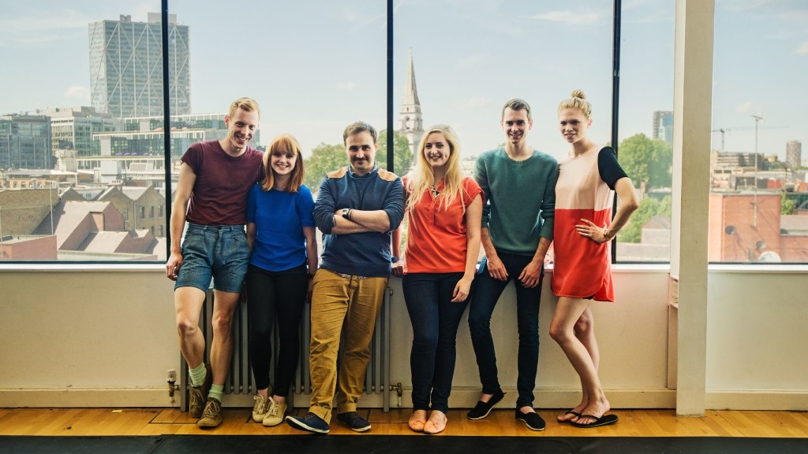

NON ZERO ONE (UK): Interactive Theatre Making/Høstscena - 2 dgr / Ålesund. FRIST 25/8
- Kategori:
- Kurs med åpning for andre
Kurs med åpning for andre
Åpent for profesjonelle skuespillere. En viss åpning for andre utøvende kunstnere med relevant erfaring. Andre kunstnere må sende CV. - Dato:
- 01.10.2016 til 02.10.2016
- Start kl :
- 10:00
- Slutt kl :
- 15:00
- Pris:
- 650,-
- Adresse:
- Jugendteatret, Parkgata 18, Ålesund, Ålesund
The brilliant award-winning interactive theatre company is coming to Norway!

{kind=link}
A two-day workshop led by the award-winning interactive theatre makers non zero one, exploring the process of making interactive theatre, and interactive theatre in performance.
Application deadline: 25. august. The fee includes a price reduction of the Høstscena festivalpass. Full price: 1300,-. Workshop participant price: 900,-.
Sign up here: http://www.skuespillersenter.no/pamelding/
"We see interactivity as the ability to make a performance responsive to the people taking part in it." - non zero one
The workshop will focus on the work of the company but will also look at the work of other contemporary theatre makers.
Workshop participants will practically develop ideas for interaction in performance, through experimentation, testing and play.
The workshop will be an opportunity to try new things without having to produce a final product.
Practical Information
- Application Deadline: 25. august. Remember to send in an updated CV with your application. Apply here: http://www.skuespillersenter.no/pamelding/
- Bring loose comfortable clothing, notebooks and pens.
- The workshop takes place during the international theatre festival Høstscena. Check out their exciting program, watch performances and meet up with colleagues!
- The workshop will be held in English
- Norwegian participants can apply for travel funding up to 1000,- NOK.
Demands of the participants:
- Has made or is interested in making/performing their own devised theatre
- Has an interest in interactive performance
- Has an interest in contemporary performance practice
- Has experience of / or is interested in collaborative practice
- For professional actors and other professional theatre makers
{kind=link}
About non zero one
{kind=link}
{kind=link}
Sarah Butcher and John Hunter from non zero one.
non zero one make award-winning interactive experiences that provide an alternative lens on everyday life for a variety of audiences, giving them a personal, revealing experience that is shaped and shared by the people taking part. Their work has been shown across the UK at venues including: The Royal National Theatre, Barbican Centre, Roundhouse, TATE Britain, Science Museum and Edinburgh Fringe Festival.
Fee for NSF- and ASSITEJ members: 600,-
In collaboration with: